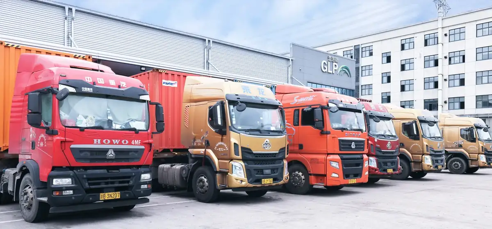

When buyers compare Alibaba, 1688 and a Yiwu sourcing partner, it is tempting to focus on the first number in a quotation. But a dependable buying decision needs a wider view: product price, supplier capability, quality risk, consolidation, payments, export preparation and the cost of solving problems when something changes.
The right route depends on your order size, supplier mix, internal China capability and the level of control your product programme requires. This guide gives ROYAL UNION buyers a practical way to choose.
Alibaba: simple access for early research
Alibaba is often a useful starting point for international buyers. Its English-language interface makes it easy to compare suppliers, request quotations and test an early product idea. It can suit a small first order, a focused SKU or a buyer who wants to begin supplier conversations quickly.
For a more complete comparison, look beyond the listed price. Confirm whether the supplier is a manufacturer or trading company, compare samples against the final specification, and plan how inspection, export documents and freight will be managed. A quote is only one part of the total buying cost.
1688: broad domestic sourcing potential
1688 is built for China’s domestic wholesale market. It can be valuable for buyers looking for standard products, broad supplier coverage or additional factory options. However, the platform and supplier communication are primarily Chinese, while payment, supplier verification and export preparation usually need local execution.
For overseas buyers, the question is not only whether a product looks less expensive on 1688. It is whether there is a dependable local process to verify the supplier, confirm specifications, make RMB payments, inspect the goods and prepare a consolidated export shipment.
A Yiwu sourcing partner: cost plus execution
A Yiwu sourcing partner adds a local execution layer. For ROYAL UNION customers, this can include supplier research and negotiation, sample coordination, order follow-up, quality assurance, warehousing, consolidation and delivery planning. The purpose is not simply to find a lower price; it is to make a multi-step sourcing programme easier to control.
This route is especially relevant when an order spans multiple suppliers or product categories. Instead of coordinating several factories, payments, inspections and shipments separately, buyers can work through a single operating plan with clear responsibilities and a consolidated view of the order.
Include these items when comparing total landed cost
- Product price, samples and agreed specifications.
- Supplier verification, production follow-up and quality inspection.
- Domestic collection, warehousing and multi-supplier consolidation.
- Payment handling, export documentation and delivery coordination.
- The commercial impact of delays, defects, stockouts or a missed selling window.
Which route suits which buyer?
Alibaba can suit an initial search, a simple product test or a buyer who is working with one supplier. 1688 can suit standard products where a buyer already has reliable local support in China. A ROYAL UNION sourcing plan is designed for buyers who need a hands-on team in Yiwu to coordinate multiple suppliers, reduce operational blind spots and build a more stable delivery process.
There is no universal cheapest route. A small, straightforward test order has different requirements from a seasonal launch, a private-label programme or a mixed-container order. The goal is to compare like for like: the same specification, quality level, service scope and delivery outcome.

Five questions to ask before you choose
1. Is the supplier producing the exact product and quality level you need? 2. Who checks the goods against the approved specification before shipment? 3. How will goods from multiple suppliers be collected and consolidated? 4. Which costs are included in the quotation and which will be added later? 5. Who owns the next step if production, quality or shipping changes?
Those questions move the conversation away from a headline price and toward the outcome that matters: an order that reaches your market in the right condition, at the right time and with fewer surprises.